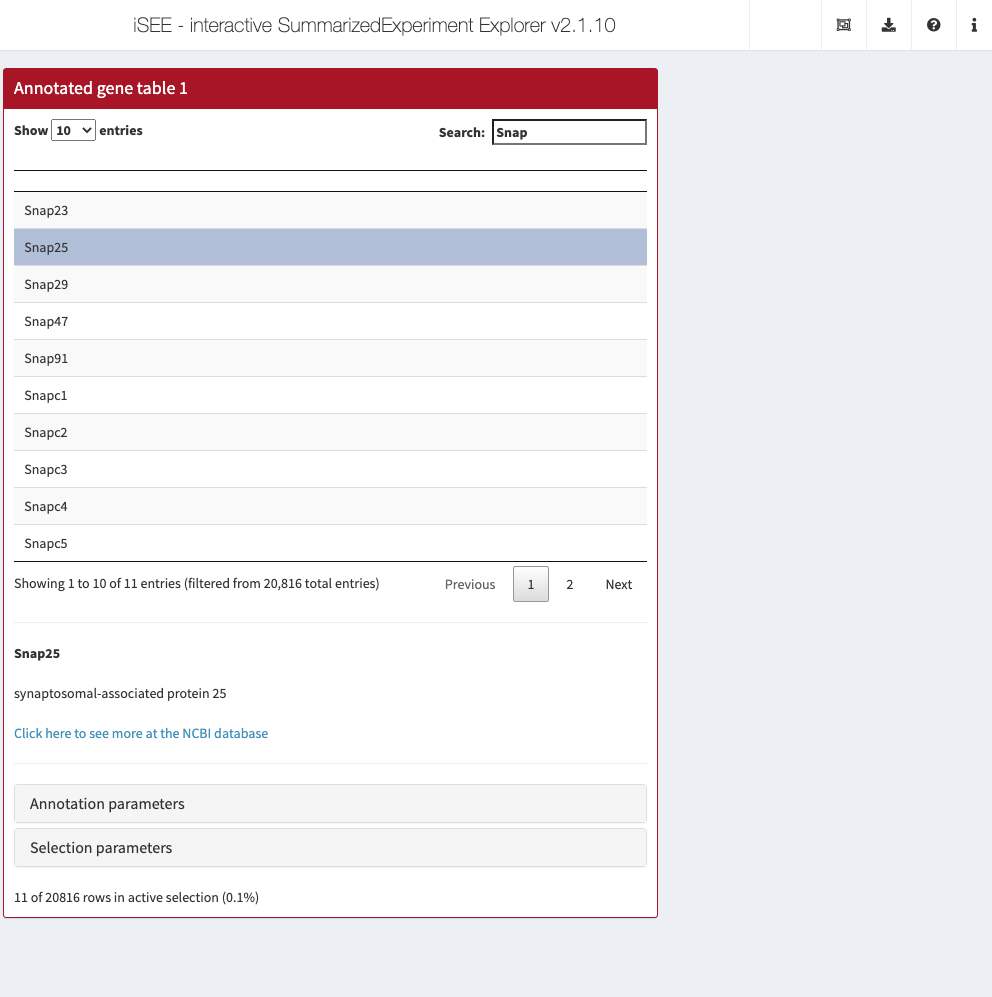

Chapter 7 Annotated gene list
7.1 Overview
When given a gene list, we often need to look up the function of the top genes in a search engine.
This typically involves copy-pasting the gene name or ID into the search box and pressing Enter, which is a pain.
Instead, we can automate this process in iSEE by creating an annotated gene table that dynamically looks up annotation for each gene in the rowData of a SummarizedExperiment.
7.2 Class basics
First, we define the basics of our new Panel class.
Our new class will be showing the gene-level metadata, so we inherit from the RowDataTable class that does exactly this.
We add some slots specifying which column of the table contains our gene IDs, the type of ID and the organism database to use.
library(iSEE)
library(S4Vectors)
setClass("GeneAnnoTable", contains="RowDataTable",
slots=c(
IDColumn="character_OR_NULL",
IDType="character",
Organism="character",
AnnoBoxOpen="logical"
)
)We specialize the validity method to check that the IDColumn is either a string or NULL;
if the latter, we assume that the ID is stored in the row name.
We also add some cursory checks for the other parameters.
allowable <- c("ENSEMBL", "SYMBOL", "ENTREZID")
setValidity2("GeneAnnoTable", function(object) {
msg <- character(0)
if (!is.null(val <- object[["IDColumn"]]) && (length(val)!=1L || is.na(val))) {
msg <- c(msg, "'IDColumn must be NULL or a string")
}
if (!isSingleString(orgdb <- object[["Organism"]])) {
msg <- c(msg, sprintf("'Organism' should be a single string", orgdb))
}
if (!isSingleString(type <- object[["IDType"]]) || !type %in% allowable) {
msg <- c(msg, "'IDType' should be 'ENSEMBL', 'SYMBOL' or 'ENTREZID'")
}
if (length(open <- object[["AnnoBoxOpen"]])!=1L || is.na(open)) {
msg <- c(msg, "'AnnoBoxOpen' should be a non-missing logical scalar")
}
if (length(msg)) {
return(msg)
}
TRUE
})We then specialize the initialize method to set reasonable defaults for these parameters. We also provide a constructor to conveniently create new instances.
setMethod("initialize", "GeneAnnoTable", function(.Object, IDColumn=NULL,
Organism="org.Mm.eg.db", IDType="SYMBOL", AnnoBoxOpen=FALSE, ...)
{
callNextMethod(.Object, IDColumn=IDColumn, IDType=IDType,
Organism=Organism, AnnoBoxOpen=AnnoBoxOpen, ...)
})
GeneAnnoTable <- function(...) {
new("GeneAnnoTable", ...)
}7.3 Setting up the interface
We define the full name and desired default color for display purposes:
setMethod(".fullName", "GeneAnnoTable", function(x) "Annotated gene table")
setMethod(".panelColor", "GeneAnnoTable", function(x) "#AA1122")We want to add another UI element for showing the gene-level annotation.
This is achieved by specializing the .defineOutput() method as shown below;
note the prefixing by the panel name to ensure that output element IDs from different panels are unique.
setMethod(".defineOutput", "GeneAnnoTable", function(x, ...) {
panel_name <- .getEncodedName(x)
tagList(
callNextMethod(), # Re-using RowDataTable's definition.
uiOutput(paste0(panel_name, "_annotation")),
hr()
)
})We also set up interface elements for changing the annotation parameters.
We will put these elements in a separate “Annotation parameters” collapsible box,
which is initialized in an opened or closed state depending on the AnnoBoxOpen slot.
setMethod(".defineInterface", "GeneAnnoTable", function(x, se, select_info) {
panel_name <- .getEncodedName(x)
c(
list(
collapseBox(
paste0(panel_name, "_AnnoBoxOpen"),
title="Annotation parameters",
open=x[["AnnoBoxOpen"]],
selectInput(paste0(panel_name, "_IDColumn"),
label="ID-containing column:",
choices=colnames(rowData(se)),
selected=x[["IDColumn"]]
),
selectInput(paste0(panel_name, "_IDType"),
label="ID type:",
choices=allowable,
selected=x[["IDType"]]
),
selectInput(paste0(panel_name, "_Organism"),
label="Organism",
choices=c("org.Hs.eg.db", "org.Mm.eg.db"),
selected=x[["Organism"]]
)
)
),
callNextMethod()
)
})7.4 Creating the observers
We specialize .createObservers to define some observers to respond to changes in our new interface elements.
Note the use of callNextMethod() to ensure that observers of the parent class are also created.
setMethod(".createObservers", "GeneAnnoTable",
function(x, se, input, session, pObjects, rObjects)
{
callNextMethod()
plot_name <- .getEncodedName(x)
.createUnprotectedParameterObservers(plot_name,
fields=c("IDColumn", "Organism", "IDType"),
input=input, pObjects=pObjects, rObjects=rObjects)
})We need to set up a rendering expression for the annotation element that responds to the selected gene.
By using .trackSingleSelection(), we ensure that this UI element updates in response to changes in the table selection.
We add a series of protective measures to avoid the application crashing due to missing organism packages or unmatched IDs.
setMethod(".renderOutput", "GeneAnnoTable", function(x, se, ..., output, pObjects, rObjects) {
callNextMethod() # Re-using RowDataTable's output rendering.
panel_name <- .getEncodedName(x)
output[[paste0(panel_name, "_annotation")]] <- renderUI({
.trackSingleSelection(panel_name, rObjects)
instance <- pObjects$memory[[panel_name]]
rowdata_col <- instance[["IDColumn"]]
selectedGene <- instance[["Selected"]]
if (!is.null(rowdata_col)) {
selectedGene <- rowData(se)[selectedGene,rowdata_col]
}
keytype <- instance[["IDType"]]
selgene_entrez <- NA
if (keytype!="ENTREZID") {
ORG <- instance[["Organism"]]
if (require(ORG, character.only=TRUE, quietly=TRUE)) {
orgdb <- get(ORG)
selgene_entrez <- try(mapIds(orgdb, selectedGene, "ENTREZID", keytype),
silent=TRUE)
}
} else {
selgene_entrez <- selectedGene
}
if (is.na(selgene_entrez) || is(selgene_entrez, "try-error")) {
return(NULL)
}
fullinfo <- rentrez::entrez_summary("gene", selgene_entrez)
link_pubmed <- paste0('<a href="http://www.ncbi.nlm.nih.gov/gene/?term=',
selgene_entrez,
'" target="_blank">Click here to see more at the NCBI database</a>')
mycontent <- paste0("<b>",fullinfo$name, "</b><br/><br/>",
fullinfo$description,"<br/><br/>",
ifelse(fullinfo$summary == "","",paste0(fullinfo$summary, "<br/><br/>")),
link_pubmed)
HTML(mycontent)
})
})Observant readers will note that the body of the rendering expression uses pObjects$memory[[panel_name]] rather than x.
This is intentional as it ensures that we are using the parameter settings from the current state of the app.
If we used x, we would always be using the parameters from the initial state of the app, which is not what we want.
7.5 In action
Let’s put our new panel to the test using the sce object from Chapter 4.
We set up our iSEE instance such that clicking on any row will bring up the Entrez annotation (if available) for that feature.
It is probably best to click on some well-annotated genes as the set of RIKEN transcripts at the front don’t have much annotation.
gat <- GeneAnnoTable(PanelWidth=8L, Selected="Snap25", Search="Snap")
app <- iSEE(sce, initial=list(gat))